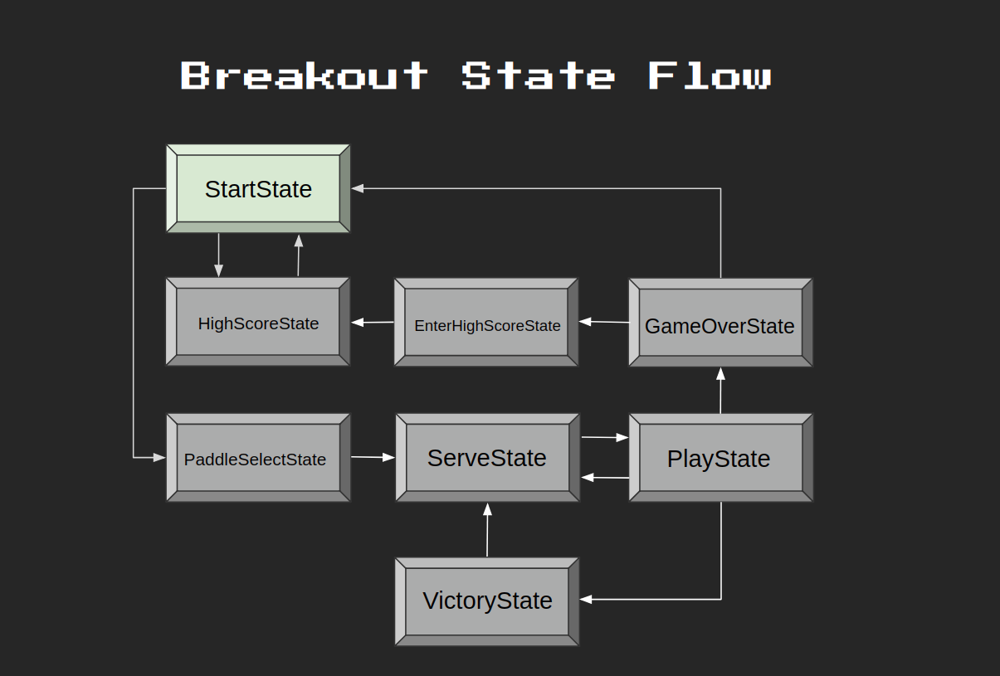

讲座 2: Breakout
Today’s Topics
- Sprite Sheets
- Sprite Sheets allow us to condense all the images we need to load for our game into one big image, with each sprite assigned a specific cell in the “sheet”.
- Procedural Layouts
- We’ll take a look at how to dynamically generate bricks for our breakout implementation!
- Managing State
- This 周 we’ll go one step further with improving our state machine in terms of code cleanliness and best practices, particularly by taking advantage of the state machine class’s built-in methods to ensure we have a 较少 polluted global namespace.
- Levels
- We’ll introduce the concept of “levels” to our game, allowing a player to “level up” and changing what we’re displaying to the screen accordingly.
- Player Health
- We’ll learn how to keep track of player “health” using hearts to give them a number of chances before losing the game.
- Particle Systems
- We’ll learn 更多 关于 Particle Systems this 周 so as to provide 更多 advanced aesthetic qualities to our game.
- Collision Detection Revisited
- Collision Detection will be a bit 更多 advanced this 周!
- Persistent Save Data
- In the context of High Scores, it’s useful to know how to save information relevant to our game so that the 下一页 时间 we 打开 it, we can still access that old information.
Downloading demo code
Breakout State Flow
- Below we map out the state flow for our final version of Breakout.
- The program will begin in StartState, which can transition 返回 and forth between itself and HighScoreState (since the user can check High Scores before playing).
- StartState can also transition to PaddleSelectState, which transitions on to ServeState.
- During gameplay, the program will transition 返回 and forth between ServeState and PlayState as the user loses health. If the user clears the level, the program transitions onto the VictoryState and then to the ServeState for the 下一页 level.
- Alternatively, if the user loses all their lives before clearing the level, the program will transition from PlayState to GameOverState, optionally transitioning to the EnterHighScoreState (if the user achieves a High Score) and then on to the HighScoreState, or simply transitioning from GameOverState to StartState if the user does not have a High Score.
-
Take a moment to examine the diagram below if in need of a visual aid:

breakout0 (“The Day-0 Update”)
- At this point, you will want to have downloaded the demo code in order to follow along.
- breakout0 displays the main screen and allows the user to toggle between the “Start” and “High Score” options.
项目 Organization
- The first thing to 笔记 will be the organizational changes we’ve made to our workspace and to our code files themselves since last 周.
- You’ll notice that we’ve organized our workspace using appropriate subdirectories for our different file types. This is a big improvement from the messy workspaces we’ve had in the past.
- Now, we have our
main.luafile out in the 打开, while our sound, font, graphics, and other files are grouped together in their own subdirectories. This is a good 示例 to follow when working on your own 项目! - In a similar vein, you’ll notice that we’ve moved away from our 上一页 tendency to store related information in individual variables. Instead, we have begun modularizing our code even 更多 by storing related values in tables, such as
gFonts,gTextures, andgSoundsfrommain.lua(recall that use of the prefixgis a common convention to denote that the variable in 问题 will have global scope). - Furthermore, we’ve moved over our familiar constant globals from
main.lua(e.g.WINDOW_WIDTH,WINDOW_HEIGHT,VIRTUAL_WIDTH,VIRTUAL_HEIGHT) into their own separate file,src, which we are then importing tomain.lua - These wholesome organizational changes 五月 seem unnecessary at first, but as your own 项目 grow 更多 complex, you will come to depend on these organizational strategies, especially once you begin to work with collaborators who 五月 otherwise not understand your 项目’s layout.
Important Code
- 下一页 in
main.luayou’ll notice:-
love.load()in which we set up our global tables as well as our state machine. -
love.update(dt)whose logic we delegate to our state machine. love.resize(w, h)-
love.keypressed(key)which we funnel intolove.keyboard.wasPressed(key), our own custom function as we did last 周 (recall why?). -
love.draw()which renders what we see on the screen. -
displayFPS()a custom function (which should be a review from 上一页 周次).
-
- The remaining logic will be found in our
src/statessubdirectory, since ourlove.update(dt)function inmain.luais deferring to our state machine. Currently, we only have BaseState and StartState.-
StartState:update(dt): allows the user to toggle between “Start” and “High Scores” on the screen, highlighting their selection and playing a toggle sound effect. -
StartState:render(): includes some graphics configurations specific to the StartState. - Like last 周, our BaseState is essentially a skeleton for our other states so that we don’t have to redefine the same methods for each State class.
-
- Be sure to 阅读 through each file carefully so as to understand its role in the overarching 项目. The code itself should look familiar, but do take the 时间 to familiarize yourself with the new organizational layout.
breakout1 (“The Quad Update”)
- breakout1 takes advantage of Sprite Sheets in order to render a Paddle sprite during PlayState.
What is a Sprite Sheet?
- A Sprite Sheet is essentially a bitmap image containing smaller images (i.e., sprites) within itself. A Sprite Sheet can be split into Quads, that is, rectangular 小组课 of itself (each encapsulating a single sprite), so that instead of having multiple image files in our 项目 for each sprite, we can 更多 efficiently use a single file that we 小组课 out into Quads when wanting to render a particular sprite.
Important Functions
-
love.graphics.newQuad(x, y, width, height, dimensions)- This function allows us to specify rectangle boundaries of our Quad and pass in the dimensions (returned via
image:getDimensionson whichever texture we want to make a Quad for).
- This function allows us to specify rectangle boundaries of our Quad and pass in the dimensions (returned via
-
love.graphics.draw(texture, quad, x, y)- This is a variant of
love.graphics.draw(), which we’ve seen, but in this case we can pass in a Quad to draw just the specific part of the texture we want, not the entire thing!
- This is a variant of
Important Code
- We’ve added a few files to our
srcsubdirectory (which, recall, imports all its files tomain.luaviaDependencies.lua). - 打开 up
Util.lua, which handles the logic for generating our Quads. You should find the following functions:-
GenerateQuads(atlas, tilewidth, tileheight)- We’ve written this function, which takes in an
atlas(synonymous with Sprite Sheet) and our desired tile dimensions to determine the dimensions of our Quads. With this info, we can loop over our atlas (treating it as a 2D coordinate system with origin at the upper left corner) and generate our Quads along the way.
- We’ve written this function, which takes in an
-
table.slice(tbl, first, last, step)- This is just a helper function to allow us to slice Lua tables in the same way that we can slice Python lists.
-
GenerateQuadsPaddles(atlas)- This function is specifically made to piece out the paddles from the sprite sheet. For this, we have to piece out the paddles a little 更多 manually, since they are all different sizes.
-
- 下一页, over in
Paddle.lua, we’ve created our Paddle class.-
Paddle:initinitializes the Paddle. -
Paddle:update(dt)allows the user to interact with the Paddle by moving it side to side. -
Paddle:render()displays the Paddle
-
- Lastly, take a look at
PlayState.lua.-
PlayState:init: instantiates a Paddle. -
PlayState:update(dt)allows the user to pause and quit the game, delegating the Paddle interactivity logic to the Paddle’s ownupdatemethod. -
PlayState:render()calls the Paddle’s ownrender()method and also displays paused text.
-
breakout2 (“The Bounce Update”)
- breakout2 uses AABB Collision Detection so that the Ball can bounce when it collides with the Paddle or the walls.
Important Code
- In
main.luayou’ll notice that we’ve modified thegFramestable to include Quads for our Ball. - Check out
Util.luato see how we’ve extracted these. -
function GenerateQuadsBalls(atlas)- In this function, we’re finding the offset for our Ball sprites in our Sprite Sheet and looping over it, generating Quads for the Balls as we go. This is essentially the analogous function for how we extracted our Paddle sprites.
- The end result is that we can now access our Paddle and Ball sprites without needing to loop over the entire Sprite Sheet each 时间, which will prove useful going forward.
- Now we can 阅读 through
Ball.lua, which creates our Ball class.-
Ball:init(skin)initializes the Ball given a specific Ball sprite. -
Ball:collides(target)checks for collisions using AABB Collision Detection. -
Ball:reset()resets the Ball to the middle of the screen. -
Ball:update(dt)implements behavior for bouncing off walls. -
Ball:render()renders the Ball to the screen.
-
- Again, we conclude with some additions to
PlayState.lua:-
PlayState:init()now instantiates the Ball. -
PlayState:update()calls the Ball’supdatemethod and naively implements behavior for bouncing off the Paddle. Can you think of a potential issue with our implementation? (提示: think 关于 what else we might want to do besides reversing the Ball’s velocity). You might be able to observe the issue by trying to bounce the Ball off the Paddle at an angle. -
PlayState:render()calls the Ball’srender()method.
-
breakout3 (“The Brick Update”)
- breakout3 renders Bricks onto the screen.
Important Code
- Notice that the
gFramestable inmain.luahas been modified again, this 时间 to include Quads for our Bricks. -
Util.luacontains the 实现细节 of extracting the Brick sprites from our Sprite Sheet.- In this case, since the Brick sprites are at the top of our Sprite Sheet, the extraction process becomes much simpler:
function GenerateQuadsBricks(atlas) return table.slice(GenerateQuads(atlas, 32, 16), 1, 21) end
- In this case, since the Brick sprites are at the top of our Sprite Sheet, the extraction process becomes much simpler:
-
Brick.luacreates our Brick class.-
Brick:init(x, y)initializes a Brick. Importantly, we include aninPlayflag to serve as a signal for whether a Brick is still in play or if it should disappear from the screen. In the context of our breakout program, this is an effective shortcut, but do 笔记 that in larger programs, it would be better practice to free 内存 that is not being used instead of just hiding it from view. -
Brick:hit()hides a Brick by toggling theinPlayflag tofalse. -
Brick:render()renders a Brick to the screen.
-
-
PlayState.luareferences a new class,LevelMaker.lua, which encapsulates all the logic for generating new levels (which boil down to Brick layouts). It also checks for collisions between the Ball and the Bricks (hiding Bricks as needed) and renders the “in play” Bricks to the screen. - To create a level,
LevelMaker.luarandomly generates a table of Bricks that can be rendered to the screen. 阅读 through theLevelMaker.createMap(level)function carefully, paying 关闭 attention to the comments.
breakout4 (“The Collision Update”)
- breakout4 implements bouncing behavior for the Ball upon a collision with a Brick. It also fixes our 上一页 naive implementation of bouncing behavior between the Ball and the Paddle.
Important 算法
- To fix our Paddle collision, we need to take the difference between the Ball’s
xvalue and the Paddle’s center, which is:paddle.x + (paddle.width / 2) * ball.xWe use this formula to scale the ball’s
dxin the negative direction. - We perform this operation on either side of the Paddle based on the Paddle’s
dx. If on the right side, the differential will be negative, so we need to callmath.absto make it positive, then scale it by a positive amount sodxbecomes positive. - For Brick collision, we must check which edge of the Ball is not inside the Brick. Below is our algorithm:
if left edge of ball is outside brick and dx is positive: trigger left-side collision else if right edge of ball is outside brick and dx is negative: trigger right-side collision else if top edge of ball is outside brick: trigger top-side collision else trigger bottom-side collisionThis is a fairly simple collision algorithm, so it is not the most accurate, particularly when faced with corner-cases, but it works essentially 99% of the 时间. For a 更多 robust solution, do check out the following alternative solution in the links below, if curious:
Important Code
- In
PlayState.lua, we’ve updated theupdate()function to reflect the collision 算法 mentioned above. - You’ll notice our new collision logic for Ball/Paddle collisions as discussed:
if self.ball.x < self.paddle.x + (self.paddle.width / 2) and self.paddle.dx < 0 then self.ball.dx = -50 + -(8 * (self.paddle.x + self.paddle.width / 2 - self.ball.x)) elseif self.ball.x > self.paddle.x + (self.paddle.width / 2) and self.paddle.dx > 0 then self.ball.dx = 50 + (8 * math.abs(self.paddle.x + self.paddle.width / 2 - self.ball.x)) end - And below that, our Ball/Brick collision detection, albeit with a small modification to account for corner-collisions. Namely, we insert a
breakstatement to ensure the Ball’s collision mechanics are only evaluated against a single Brick in the event that it collides at the corner of two Bricks. - And of 课程, we slightly increase the Ball’s velocity after a collision.
for k, brick in pairs(self.bricks) do if brick.inPlay and self.ball:collides(brick) then brick:hit() if self.ball.x + 2 < brick.x and self.ball.dx > 0 then self.ball.dx = -self.ball.dx self.ball.x = brick.x - 8 elseif self.ball.x + 6 > brick.x + brick.width and self.ball.dx < 0 then self.ball.dx = -self.ball.dx self.ball.x = brick.x + 32 elseif self.ball.y < brick.y then self.ball.dy = -self.ball.dy self.ball.y = brick.y - 8 else self.ball.dy = -self.ball.dy self.ball.y = brick.y + 16 end self.ball.dy = self.ball.dy * 1.02 break end end
breakout5 (“The Hearts Update”)
- breakout5 implements the idea of “health” for the user, which is displayed on the screen as hearts.
Important Code
- Notice in
StartState.luawe are continuing our shift away from global variables (with global tables being an exception) by integrating relevant data fields into our State Machine.- On line 35, we see that when we transition from StartState to ServeState, we are passing along
paddle,bricks,health, andscorethroughgStateMachine:change(), which we might’ve alternatively implemented as global values. - This design is cleaner since it allows us to remove unnecessary values from our files. For 示例, it makes sense to have
paddleandbrickswhen we are in ServeState, but not so much when we are in HighScoreState.
- On line 35, we see that when we transition from StartState to ServeState, we are passing along
- On that 笔记, take a look at
ServeState.lua, which serves a very similar purpose to the ServeState from Pong. The code should look familiar, as all we’re doing here is providing a state in which the user can hit theenterkey to transition to the PlayState. - In
main.luayou’ll notice we’ve addedheartsto ourgFramestable and included a helper function for rendering the user’shealthon the screen. It simply draws the corresponding number of full hearts followed by empty hearts per the user’shealth.function renderHealth(health) local healthX = VIRTUAL_WIDTH - 100 for i = 1, health do love.graphics.draw(gTextures['hearts'], gFrames['hearts'][1], healthX, 4) healthX = healthX + 11 end for i = 1, 3 - health do love.graphics.draw(gTextures['hearts'], gFrames['hearts'][2], healthX, 4) healthX = healthX + 11 end end -
PlayState.luanow also takes care of keeping score, monitoring the user’shealth, and transitioning to other States as needed. You should be able to find thehealth-tracking code inPlayState:update(), which simply decreases health and reverts to ServeState when the Ball goes past the Paddle beyond the bottom of the screen:if self.ball.y >= VIRTUAL_HEIGHT then self.health = self.health - 1 gSounds['hurt']:play() if self.health == 0 then gStateMachine:change('game-over', { score = self.score }) else gStateMachine:change('serve', { paddle = self.paddle, bricks = self.bricks, health = self.health, score = self.score }) end endThe score tracking can also be found in
PlayState:update(), where we simply add 10 points to thescoreevery 时间 a Ball/Brick collision is detected. -
GameOverState.lua, which is unsurprisingly called when the user loses all health, creates our new GameOverState that simply renders a “Game Over” screen with the final score. When a user presses theenterkey in this state, they’re taken 返回 to the StartState.
breakout6 (“The Pretty Colors Update”)
- breakout6 updates the levels to include different colors and layouts of Bricks.
Important Code
- We’ve made a few modifications to
LevelMaker.luain order to allow for a 更多 varied gaming experience. - The changes mostly consist of adding some new flags so that we can display different colors and layouts for our bricks.
- 阅读 through the changes to this file carefully, paying special attention to the comments, to understand how we are generating our new map layouts.
breakout7 (“The Tier Update”)
- breakout7 differentiates between the different tiers and colors of Bricks, making updates to the gameplay and the scoring as a result.
Important Code
- Take a look at
Brick.lua. You’ll notice that we’ve updated theBrick:hit()method such that it only toggles theinPlayflag if the Brick being hit is of the lowest tier and color. Otherwise, it simply decrements the tier and/or color of the Brick.if self.tier > 0 then if self.color == 1 then self.tier = self.tier - 1 self.color = 5 else self.color = self.color - 1 end else if self.color == 1 then self.inPlay = false else self.color = self.color - 1 end end - In
PlayState.lua, we’ve updated the scoring algorithm to attribute higher values to Bricks of higher tiers and colors. Whereas previously we always added 10 points for any Ball/Brick collision, we now take color and tier into account:self.score = self.score + (brick.tier * 200 + brick.color * 25)
breakout8 (“The Particle Update”)
- breakout8 takes advantage of LÖVE2D’s Particle System features to create a nicer visual effect when the Ball collides with a Brick.
Important Functions
-
love.graphics.newParticleSystem(texture, particles)- This function takes in a particle texture and maximum number of particles we can emit and creates a particle system we can emit from, update, and render.
- For 更多 LÖVE particle system functions and info, check out this link:
Important Code
- You’ll notice, when running the program, that the particles adopt the color of the Brick being hit.
- Atop our
Brickclass, we definepaletteColorsas a table of RGB values corresponding to blue, green, red, purple, and gold. - In
Brick:init(), we create a new particle system:self.psystem = love.graphics.newParticleSystem(gTextures['particle'], 64) self.psystem:setParticleLifetime(0.5, 1) self.psystem:setLinearAcceleration(-15, 0, 15, 80) self.psystem:setEmissionArea('normal', 10, 10) - In
Brick:hit(), we then usepaletteColorsto cause our particle system to interpolate between the appropriate colors, brighter for higher tiers and fading away over the particle’s lifetime.self.psystem:setColors( paletteColors[self.color].r / 255, paletteColors[self.color].g / 255, paletteColors[self.color].b / 255, 55 * (self.tier + 1) / 255, paletteColors[self.color].r / 255, paletteColors[self.color].g / 255, paletteColors[self.color].b / 255, 0 ) self.psystem:emit(64) - Finally, we need a separate render function for our particles so it can be called after all bricks are drawn. Otherwise, some bricks would render over other bricks’ particle systems:
function Brick:renderParticles() love.graphics.draw(self.psystem, self.x + 16, self.y + 8) end
breakout9 (“The Progression Update”)
- breakout9 allows the user to beat a level and progress to the 下一页.
Important Code
- You’ll notice in line 40 of
StartState.luathat we are now passing in an additional field toServeStateupon transition, namely,level. - We’ll continue to do this once each level has been beaten, incrementing
levelas needed. - On line 204 in
PlayState.lua, we’ve written a new method,checkVictory(), that checks if the current level has been beaten, by checking if every Brick’sinPlayflag has been toggled tofalse. - This method is called on line 88
within
Playstate:update(dt), since it makes sense to check if the level has been beaten each 时间 a Brick is hit. -
VictoryState.luacontains the code for producing our victory screen. It is only ever activated when the user beats a level. This is also where we increment the value oflevel. Upon increasing thelevel, we must create a new map:function VictoryState:update(dt) self.paddle:update(dt) self.ball.x = self.paddle.x + (self.paddle.width / 2) - 4 self.ball.y = self.paddle.y - 8 if love.keyboard.wasPressed('enter') or love.keyboard.wasPressed('return') then gStateMachine:change('serve', { level = self.level + 1, bricks = LevelMaker.createMap(self.level + 1), paddle = self.paddle, health = self.health, score = self.score }) end end
breakout10 (“The High Scores Update”)
- breakout10 introduces the ability to view high scores.
Important Functions
-
love.filesystem.setIdentity(identity)- This function sets the active subfolder in the default LÖVE save directory for reading and writing files.
-
love.filesystem.exists(path)- Checks if a file exists in our save directory.
-
love.filesystem.write(path, data)- Writes data, as a string, to the file 地点 at
path.
- Writes data, as a string, to the file 地点 at
-
love.filesystem.lines(path)- Returns an iterator over the string lines in a file at
path, located in our active identity path.
- Returns an iterator over the string lines in a file at
Important Code
- In
main.lua, we’ve written a new function (loadHighScores()) to load existing high scores from a.lstfile, which is saved in LÖVE2D’s default save directory (calledbreakout). - If the file doesn’t exist, we create it and fill it with arbitrary values, leaving at least 10 blank entries.
- Once the file exists, we can iterate through every line, filling in names and scores to a table.
breakout11 (“The Entry Update”)
- breakout11 allows users to save their own high scores.
Important Code
- In
EnterHighScoreState.lua, we allow users to enter their high scores by choosing a 3-character 姓名. The 姓名 is selected by toggling the 3 characters using the up and down keys. We use ASCII values to implement this behavior. - Once the user settles on a 姓名, we write their score to the
breakoutfile, taking care to loop through the existing scores in order to replace the lowest one (if necessary).
breakout12 (“The Paddle Select Update”)
- breakout12 introduces a new state that allows the user to select a Paddle sprite before starting the game.
Important Code
- In
PaddleSelectState.lua, we render a new screen to the user which contains some text, a left arrow, a right arrow, and a Paddle. - The user can toggle between Paddles using the arrows and can make a selection by pressing
enter. - Notice that this State is now in charge of transitioning over to
ServeStateand passing along the relevant values.
breakout13 (“The Music Update”)
- breakout13 adds 背景 music to the game.
- This is done in
main.luaby adding themusictrack to ourgSoundstable and callinggSounds['music']:play()as well asgSounds['music']:setLooping(true).